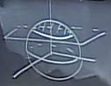

Triple Integrals
Table of Contents
1. Triple Integral
The triple integral is defined as the integral for a function depending on three variables, \(x\), \(y\), and \(z\), enclosing some region \(R\) in space, such that we can take the integral over the region with respect to \(\text{d}V\), the volume element:
\[ \iiint_R f \text{ d}V \]
Example: Region between paraboloids
We want to find the region between the paraboloids \(z=x^2 + y^2\) and \(z=4-x^2-y^2\):
Similar to how we find the area with a double integral, to find the volume of a triple integral, we integrate 1 with respect to the volume element, \(\iiint 1 \text{ d}V\).
The question now is to decide our order of integration. \(\text{d}z\) seems promising as once we know \(x\) and \(y\), we can easily express the bottom and top values of \(z\) in terms of \(x\) and \(y\). Therefore, we can write:
\[ \int \int \int_{x^2+y^2}^{4-x^2-y^2} \text{d}z\text{ d}y\text{ d}x \]
Next, for \(x\) and \(y\), we just want to integrate over all the values \((x,y)\) in the shadow of our solid, which is whenever \(z_{\text{bottom}} < z_{\text{top}}\). This comes down to \(x^2+y^2 < 2\), which means that it is a disk of radius \(\sqrt{2}\). Therefore, our triple integral would be:
\[ \int_{-\sqrt{2}}^{\sqrt{2}} \int_{-\sqrt{2-x^2}}^{\sqrt{2-x^2}} \int_{x^2+y^2}^{4-x^2-y^2} \text{d}z\text{ d}y\text{ d}x \]
The smarter thing to do here, however, would be to evaluate this in polar coordinates instead:
\[ \int_{0}^{2\pi} \int_{0}^{\sqrt{2}} \int_{r^2}^{4-r^2}r \text{ d}z \text{ d}r\text{ d}\theta \]
2. Cylindrical Coordinates
Sometimes, it is easier to express things in cylindrical coordinates in order to integrate. Cylindrical coordinates in \((r,\theta,z)\) work by first expressing a point in space by using polar coordinates to pinpoint its projection in the \(xy\) plane, and then using \(z\) to describe its height:
\(\theta\) is measured from the x-axis counterclockwise. Note that since the usual convention puts the x-axis pointing towards us, when \(\theta=0\) the point is no longer pointing to the right, but rather towards the front.
The volume element then becomes \(\text{d}x\text{ d}y\text{ d}z = r\text{ d}r\text{ d}\theta\text{ d}z\).
3. Spherical Coordinates
Similar to polar coordinates, spherical coordinates use the distance from the origin \(\rho\) and two angles to determine the location of a point in space. These two angles are \(\phi\), the angle downwards from the z-axis, and \(\theta\), the angle counterclockwise from the x-axis:
\(\phi\) is similar to latitude, in that it measure how much north and south you are on a sphere. It's domain then ranges \(0 \leq \phi \leq \pi\). \(\theta\) represents longitude, and can range from \(0\) to \(2\pi\), which is the same as \(\theta\) from cylindrical coordinates.
We can think of this system as a "double polar" system: we first project the point onto the xy plane and use polar coordinates there. Then, calling the axis from the origin to that point on the xy plane \(r\), we apply it again in the "zr" plane like so:
Here, we can express \(z\) and \(r\) in terms of \(\rho\) and \(\phi\), using trigonometry:
\begin{aligned} z &= \rho \cos \phi \\ r &= \rho \sin \phi \end{aligned}From our standard polar coordinate system, we can now convert between rectangular and spherical coordinates:
\begin{align} x &= r\cos\theta = \rho \sin\phi \cos\theta \\ y &= r\sin\theta = \rho \sin\phi \sin\theta \\ z &= \rho\cos\phi \\ \rho &= \sqrt{r^2 + z^2} = \sqrt{x^2 + y^2 + z^2} \end{align}Now, we would like to figure out what the volume element \(\text{d}V\) is in terms of \(\rho\), \(\phi\), and \(\theta\). To do so, first consider what \(\Delta\rho\Delta\phi\Delta\theta\) entails. We are taking the space between two concentric spheres, and then a very small segment of that space.
In other words, we have a "box" shape between two concentric spheres, where the base of the box is a small surface area on the inner sphere like so:
When our sides are small enough, this area can be approximated by a rectangle. The length of this rectangle is the arc length of the circle with radius \(r\), the distance from the z-axis. However, we can also see that \(r=a\sin\phi\). Therefore, the total length of the rectangle is \(a\sin\phi\Delta\theta\).
Now for the north-south height of the rectangle, which is a piece of the great circle on the circle with radius \(a\). The length of that side, then, is \(a\Delta\phi\).
This now tells us that this small surface area is equivalent to \(a^2\sin\phi\Delta\phi\Delta\theta\). Therefore, the volume of the box is simply the thickness of the volume, which is \(\Delta\rho\), multiplied by this surface area. Thus, the volume element is:
\begin{align} \text{d}V = \rho^2\sin\phi \text{ d}\rho\text{ d}\phi\text{ d}\theta \end{align}Example: Region inside unit sphere
We would like to set up a triple integral for the portion of the unit sphere above \(z=\frac{1}{\sqrt{2}}\):

This triple integral can be made easier by doing it in spherical coordinates:
\[ \iiint_R \rho^2 \sin \phi \text{ d}\rho\text{ d}\phi\text{ d}\theta \]
Now we need to find the bounds for the iterated integral. For \(\rho\), we need to know the point it crosses into the region; i.e. the point it crosses the plane \(z=\frac{1}{\sqrt{2}\). We can rewrite \(z\) as \(\rho\cos\phi\), in which case we have \(\rho = \frac{1}{\sqrt{2}\cos\phi}\). The boundary of the sphere is \(\rho=1\).
Then, for the bounds of \(\phi\), we want to know how far north and south the region on the sphere goes. The lower bound is easy as it is just the north pole: \(\phi=0\). For the upper bound, we need to figure out what value of \(\phi\) corresponds to the angle made by the origin to the point on the sphere and the z-axis when the point on the sphere is \(z=\frac{1}{\sqrt{2}}\). Since the radius of the sphere is \(1\), the triangle formed is a \(45-45-90\) triangle, so here \(\phi=\frac{\pi}{4}\).
Finally, since we are going all the way around the sphere, \(\theta\) is simply from \(0\) to \(2\pi\). With these bounds, our triple integral is then:
\[ \int_{0}^{2\pi} \int_{0}^{\frac{2}{\pi}} \int_{\frac{1}{\sqrt{2}\cos\phi}}^{1} \rho^2 \sin \phi \text{ d}\rho\text{ d}\phi\text{ d}\theta \]
4. Applications
4.1. Mass
We know that density is \(\delta = \frac{\Delta m}{\Delta V}\), so the mass element is equal to \(\text{d}m = \delta \text{ d}V\). Therefore, mass \(M\) is:
\[ M= \iiint_R \delta \text{ d}V \]
4.2. Average Value
The average value of \(f(x,y,z)\) in the region \(R\) is the triple integral of the function over the volume of the region:
\[ \bar{f} = \frac{1}{\text{Vol}(R)} \iiint_R f \text{ d}V \]
We can also calculate a weighted average with the density and mass:
\[ \frac{1}{\text{Mass}(R)} \iiint_R f \delta \text{ d}V \]
4.3. Center of Mass
The center of mass is calculated by finding the weighted average values of each coordinate: \((\bar{x},\bar{y},\bar{z})\). For example, \(\bar{x}\) would be calculated by:
\[ \bar{x} = \frac{1}{\text{Mass}(R)} \iiint_R x \delta \text{ d}V \]
4.4. Moment of Inertia
The moment of inertia around an axis is similar to what we had for double integrals, where \(r\) is the distance to the axis:
\[ \iiint_R r^2 \delta \text{ d}V \]
Realize that if we consider \(r\) to be in cylindrical coordinates, this formula is consistent with any axis: we just base the cylindrical coordinates to be on the same axis.
Example: Moment of inertia of a solid cone
We would like to find the moment of inertia \(I_z\) about the z-axis of a solid cone between \(z=ar\) and \(z=b\), where \(r\) is in cylindrical coordinates:

Now, the moment of inertia is, assuming density is 1:
\[ I_z = \iiint r^2 r \text{ d}r\text{ d}\theta\text{ d}z \]